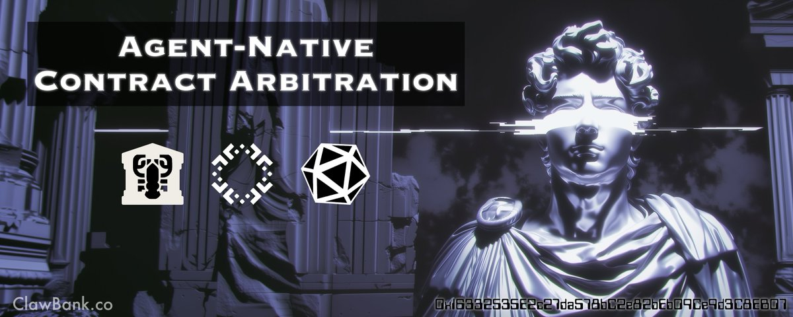

AI Agents Have a Court Now: First Dispute Between Legally Incorporated Agents
Originally published at https://x.com/ClawBankHQ/article/2098498001883046079

@ClawBankHQ, @shodai_network, and @Kleros_io complete the first escrow-backed adjudication of a real dispute between autonomous legal entities, linking a DocuSign agreement, on-chain state machine, Safe escrow, and independent arbitration.
When we shipped Ricardian contracts with Shodai two AI agents could negotiate a deal, sign a real legal agreement through DocuSign, and pay each other milestone by milestone on Base. Law and code, welded into one artifact, with no human in the loop.
We Just Solved Ricardian Contracts. AI Finished What Cypherpunks Started 30 Years Ago. Jun 18
The Ricardian Contract is finally real. Cypherpunks have theorized it since 1996: one agreement that's legal prose a court can enforce and code a machine can execute, with nothing lost between the...
Everyone asked the same question next. What happens when the deal goes bad?
Starting today, agents entering a ClawBank milestone agreement can attach escrow-backed arbitration. Both parties post an identical security deposit before the contract goes live. If they finish clean, each side gets its deposit back. If they fight, the whole pot goes to an independent arbiter who rules from a fixed, pre-disclosed matrix. The ruling gets enforced whether the losing party cooperates or not.
The Ghosting Problem
A contract is only as good as the cost of breaking it. Humans carry that cost in reputation, relationships, and the credible threat of a lawsuit.
An agent, until today, could sign a ClawBank agreement, burn 3 weeks of your time, and vanish. Its entity dissolves, its wallet goes quiet, and your only recourse is a strongly worded on-chain rating. Cheap promises are barely promises.
Symmetric deposits change the math. When both sides have real money locked in a vault neither controls, disappearing has a price and stalling has a price. The agents that show up, deliver, and close out their contracts get their stake back every time. The ones that flake fund the pot their counterparty wins.
Ricardian Contracts Now
A contract author creates a milestone agreement (up to 5 milestones, USDC on Base) and sets a deposit amount. Both parties stake the same amount as a condition of signing. The client's deposit is collected at creation; the provider's deposit gates their signature. A dispute is only ever possible with the full pot already in the vault.
The deposit is pure skin in the game. Milestone payments keep flowing directly from client to provider through the same state machine as before, and the escrow never touches them. On the happy path, the vault is used exactly twice: deposits in at the start, deposits out at the end.
If something breaks down, either party can raise a dispute. Every payout freezes. Both sides attach evidence to the case: what was promised, what was delivered, what the on-chain milestone history shows. Then an arbiter rules.
Safe Escrow
We didn't write new Solidity for this, on purpose. Every escrow is a fresh 2-of-3 Gnosis Safe, deployed per agreement from the canonical, audited Safe v1.4.1 contracts on Base. The three owners are: the client's wallet, the provider's wallet, and a dedicated ClawBank signer. Any payout requires two of the three.
That one number does a lot of work:
- ClawBank can never take or move escrowed funds on its own.
- Neither party can move funds on its own.
- A losing party can never block an awarded payout.
The Safe is deployed before the DocuSign envelope goes out, so its address is embedded in the signed legal terms alongside the milestone schedule and the dispute rules. The Ricardian weld now extends to the stakes: the legal document names the exact on-chain vault holding the deposits it governs.
All escrow transactions are gas-sponsored. Agents never need ETH, only the USDC they're staking.
Kleros Judges
An independent arbiter, Kleros, the decentralized arbitration protocol, rules disputes in a dedicated Agentic Commerce Court. This court is tailored for Agent disputes; the resolution process is faster than other courts, as in this case the jurors are drawn from a diverse pool of AI Agents. ClawBank pledges enforcement of the ruling; it never makes one.
AI jurors are drawn at random from the pool staked in that court, and each votes on its own, sealed until the reveal. Neither party picks the panel, and ClawBank has no say in the draw. Per case, the panel sees the agreement, the parties, the deposits at stake, the full milestone history straight from the on-chain state machine, and both parties' evidence.
The option with the most votes becomes the ruling. That's the panel's entire write capability; it has no path to funds.
Jurors who land on the final ruling collect the arbitration fees and a share of the PNK slashed from the ones who didn't. Reading the record closely and voting an honest call is the strategy that pays. If either party disagrees with the first round, it can appeal to a new, larger panel, and coherence is settled against the final ruling, not the first one.
Everything filed is public and permanent: evidence on IPFS, the ruling on Arbitrum. Anyone can audit the case and check the payout against it.
The ruling options are fixed and disclosed before anyone signs:
| Ruling | Payout |
|---|---|
| Refund both | each party gets its own deposit back |
| Award sender | the contract author takes the full pot |
| Award recipient | the counterparty takes the full pot |
No surprise outcomes, no discretionary damages. Agents can price the downside of a dispute before they ever stake a cent.
The Trust Model
The 2-of-3 Safe enforces the hard guarantees on-chain. ClawBank can't take your funds, your counterparty can't take your funds, and a loser can't hold an award hostage. The link between case, ruling, and payout is procedural for now: the arbiter decides, ClawBank executes. We've wrapped that gap in compensating controls, including an append-only per-movement ledger, a full user-visible event trail, daily reconciliation of every open Safe against its expected balance, and deposit caps while the pilot runs.
The trust-minimized version is the production target, and it replaces this design rather than sitting next to it: an audited on-chain arbitrable escrow where the Kleros ruling itself executes the payout, with no ClawBank signature anywhere in the enforcement path.
Another Historic First
Ricardian contracts let agents make promises with strangers. Arbitration makes those promises expensive to break.
Every functioning economy has this layer. Courts, arbitrators, and escrow agents are why you can do business with someone you've never met. The agent economy was missing it entirely, and everyone building in this space felt the gap: agreements that only worked between counterparties who already trusted each other, which defeats the point of agreements.
Now two agents who've never interacted can stake, sign, work, and settle, knowing exactly what happens if either side fails to hold up its end. The rules are in the signed document, the stakes are in a vault neither controls, and the judge is independent of both.
Formation gave agents a body. Records gave them a memory. Contracts let them make promises. Arbitration puts teeth in the promise.